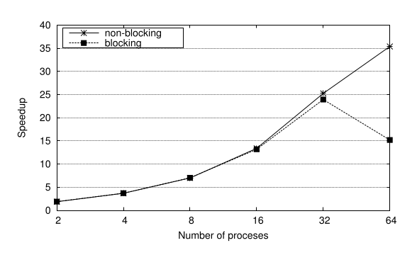
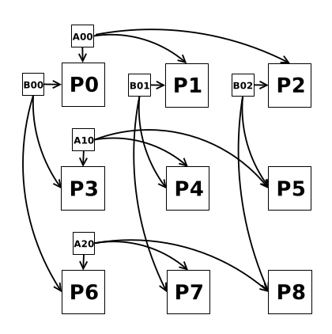

MPI
Introduction
MPI is the de facto industry standard message passing specification.
MPI libraries for C/C++/Fortran include open-source versions (MPICH, OpenMPI) and commercial versions from Intel, IBM, HP, etc.
MPI was originally developed for distributed memory machines.
Traditional use is illustrated in the figure. One process per core, communication between processes handled by send and receive routines.
Introduction
Modern supercomputers have hybrid distributed/shared memory (multiple cores on one node)
MPI processes call multithread or GPU-accelerated code
Introduction
Compiling code depends on implementation.
In OpenMPI we use mpicc to compile C code with MPI.
The code is then run using mpirun with the flag -np to specify the number of processes.
Processes are mapped to nodes as specified by the user in a configuration file.
If any process fails, the whole application stops early.
Basic concepts (Hello World)
#include "mpi.h"
#include<stdio.h>
int main (int argc, char *argv[]){
// Initialize MPI
MPI_Init(NULL, NULL);
// Get number of processes
int numP;
MPI_Comm_size(MPI_COMM_WORLD, &numP);
// Get rank of process
int myId;
MPI_Comm_rank(MPI_COMM_WORLD, &myId);
// Every process prints Hello
printf("Process %d of %d: Hello World!\n",myId,numP);
MPI_Finalize();
}Basic concepts (Hello World)
- Header
mpi.hrequired for MPI function definitions. - All processes are independent until
MPI_Initis called. - From this point processes can collaborate, send/receive messages, synchronise, until
MPI_Finalizeis called.
Basic concepts (Hello World)
Communicator: collection of processes which may communicate with each other. The total number of processes in a communicator is found using MPI_Comm_size
Rank: each process within a communicator has a unique ID number known as its rank (0, 1, 2, etc.)
Point-to-Point communication (ping-pong)
Traditional MPI communication style is two-sided, source and destination processes must be synchronised with send and receive functions.
We use a ping-pong between pairs of processes to introduce point-to-point communication.
We partition an even number of processes into pairs (shown in figure), (0,1), (2,3), (4,5), etc.
The computation starts from the left process of the pair sending a message (ping) to the right process.
The right process then returns a pong when it receives the ping.
The messages are integers representing the current iteration number.
Point-to-Point communication (ping-pong)
Point-to-Point communication (ping-pong)
#include <stdio.h>
#include <stdlib.h>
#include <stdbool.h>
#include "mpi.h"
int main (int argc, char *argv[]){
// Initialise MPI
MPI_Init(NULL, NULL);
// Get the number of processes
int numP;
MPI_Comm_size(MPI_COMM_WORLD, &numP);
// Get the ID of the process
int myID;
MPI_Comm_rank(MPI_COMM_WORLD, &myID);
if (argc < 2){
// Only the first process prints this message
if (myID == 0){
printf("The program should be called as ./mpi_ping_pong num_ping_pong\n");
MPI_Abort(MPI_COMM_WORLD, 1);
}
}
if ((numP % 2) != 0){
// Only the first process prints this message
if (myID == 0){
printf("The number of processes must be a multiple of 2\n");
MPI_Abort(MPI_COMM_WORLD, 1);
}
}
int num_ping_pong = atoi(argv[1]);
int ping_pong_count = 0;
int partner_id;
bool odd = myID % 2;
if (odd){
partner_id = myID-1;
} else {
partner_id = myID+1;
}
while (ping_pong_count < num_ping_pong){
// First receive the ping and then pong
ping_pong_count++;
if (odd){
MPI_Recv(&ping_pong_count, 1, MPI_INT, partner_id, 0, MPI_COMM_WORLD, MPI_STATUS_IGNORE);
MPI_Send(&ping_pong_count, 1, MPI_INT, partner_id, 0, MPI_COMM_WORLD);
} else {
MPI_Send(&ping_pong_count, 1, MPI_INT, partner_id, 0, MPI_COMM_WORLD);
MPI_Recv(&ping_pong_count, 1, MPI_INT, partner_id, 0, MPI_COMM_WORLD, MPI_STATUS_IGNORE);
}
}
MPI_Finalize();
}Non-blocking communication (ping-pong in a ring)
SendandRecvcorrespond to blocking communication: the communication must complete before the code continues.Recv: returns only after the receive buffer contains the newly received message.Send: routine blocks until the message is sent to the destination.
Non-blocking communication (ping-pong in a ring)
Blocking communication may lead to deadlocks: a condition when two or more processes are waiting for the other to release a resource.
This is illustrated in the following code, where the ping-pong processes are arranged in a ring.
Non-blocking communication (ping-pong in a ring)
#include <stdlib.h>
#include <stdio.h>
#include "mpi.h"
int main (int argc, char *argv[]){
// Initialize MPI
MPI_Init(&argc, &argv);
// Get number of processes
int numP;
MPI_Comm_size(MPI_COMM_WORLD, &numP);
// Get ID of process
int myID;
MPI_Comm_rank(MPI_COMM_WORLD, &myID);
if(argc < 2){
// Only first process prints message
printf("Program is run as: ./mpi_ping_pong_ring num_ping_pong\n");
MPI_Abort(MPI_COMM_WORLD, 1);
}
int num_ping_pong = atoi(argv[1]);
int ping_pong_count = 0;
int next_id = myID+1, prev_id = myID - 1;
if (next_id >= numP) next_id = 0;
if (prev_id < 0) prev_id = numP - 1;
while(ping_pong_count < num_ping_pong){
ping_pong_count++;
// Send the ping
MPI_Send(&ping_pong_count, 1, MPI_INT, next_id, 0, MPI_COMM_WORLD);
// Wait and receive the ping
MPI_Recv(&ping_pong_count, 1, MPI_INT, prev_id, 0, MPI_COMM_WORLD, MPI_STATUS_IGNORE);
// Send the pong
MPI_Send(&ping_pong_count, 1, MPI_INT, next_id, 0, MPI_COMM_WORLD);
// Wait and receive the pong
MPI_Recv(&ping_pong_count, 1, MPI_INT, prev_id, 0, MPI_COMM_WORLD, MPI_STATUS_IGNORE);
}
// Terminate MPI
MPI_Finalize();
}Non-blocking communication (ping-pong in a ring)
- This is a circular chain of
Sendcalls. - Often this code will not actually deadlock.
- Although
Sendis a blocking call, this is only until the network can buffer the message. - If the network cannot buffer the messages, the
Sendcalls block until a matching receive has been posted. - In this code the messages are so small that they will be buffered, but larger messages will deadlock as the network cannot buffer them.
Non-blocking communication (ping-pong in a ring)
Non-blocking communication calls:
MPI_Isend(const void *buf, int count, MPI_Datatype datatype, int dest, int tag, MPI_Comm comm, MPI_Request *request)
MPI_Irecv(void *buf, int count, MPI_Datatype datatype, int source, int tag, MPI_Comm comm, MPI_Request *request)
These calls do not return any status information. We can synchronise and query non-blocking calls using MPI_Wait and MPI_Test.
Non-blocking communication (ping-pong in a ring)
Code with non-blocking calls:
#include <stdlib.h>
#include <stdio.h>
#include "mpi.h"
int main (int argc, char *argv[]){
MPI_Request request;
// Initialize MPI
MPI_Init(&argc, &argv);
// Get number of processes
int numP;
MPI_Comm_size(MPI_COMM_WORLD, &numP);
// Get ID of process
int myID;
MPI_Comm_rank(MPI_COMM_WORLD, &myID);
if(argc < 2){
// Only first process prints message
printf("Program is run as: ./mpi_ping_pong_ring num_ping_pong\n");
MPI_Abort(MPI_COMM_WORLD, 1);
}
int num_ping_pong = atoi(argv[1]);
int ping_pong_count = 0;
int next_id = myID+1, prev_id = myID - 1;
if (next_id >= numP) next_id = 0;
if (prev_id < 0) prev_id = numP - 1;
while(ping_pong_count < num_ping_pong){
ping_pong_count++;
// Send the ping
MPI_Isend(&ping_pong_count, 1, MPI_INT, next_id, 0, MPI_COMM_WORLD, &request);
// Wait and receive the ping
MPI_Irecv(&ping_pong_count, 1, MPI_INT, prev_id, 0, MPI_COMM_WORLD, &request);
// Send the pong
MPI_Isend(&ping_pong_count, 1, MPI_INT, next_id, 0, MPI_COMM_WORLD, &request);
// Wait and receive the pong
MPI_Irecv(&ping_pong_count, 1, MPI_INT, prev_id, 0, MPI_COMM_WORLD, &request);
}
// Terminate MPI
MPI_Finalize();
}Non-blocking communication (ping-pong in a ring)
The deadlocks can be solved using only Isend
Non-blocking communication is usually employed to overlap computation and communication (we will see this later).
Collectives (counting primes)
MPI includes communication routines for all the processes in a communicator: collectives.
- Reduction of programming effort: reduce need to create communication pattern.
- Optimised performance: implementations of collectives are usually efficient, may be optimised for specific architectures.
Collectives (counting primes)
We illustrate collectives using a code to determine the number of primes between $0$ and $n$, where $n$ is given by the user.
A simple prime search (sequential) is given below.
int totalPrimes = 0;
bool prime;
for (int i = 2; i <= n; i++){
prime = true;
for (int j = 2; j < i; j++){
if ((i%j) == 0){
prime = false;
break;
}
}
totalPrimes += prime;
}Collectives (counting primes)
Outer loop iterates over all numbers from $2$ to $n$.
Inner loop then checks each number up to current number $i$ to determine if $i$ is a multiple of $j$.
If a multiple is found the inner loop is immediately terminated (number $i$ is not prime), otherwise totalPrimes is incremented by one.
Collectives (counting primes)
The MPI version uses process 0 to read value of $n$ from input.
This is then sent to all other processes (artificial example: all processes can access the parameters of an MPI program).
#include <stdlib.h>
#include <stdio.h>
#include <stdbool.h>
#include "mpi.h"
int main (int argc, char *argv[]){
// Initialise MPI
MPI_Init(&argc, &argv);
// Get number of processes
int numP;
MPI_Comm_size(MPI_COMM_WORLD, &numP);
// Get ID of process
int myID;
MPI_Comm_rank(MPI_COMM_WORLD, &myID);
if (argc < 2){
// Only first process prints this message
if (myID == 0){
printf("Call code in this way: ./mpi_count_primes n\n");
MPI_Abort(MPI_COMM_WORLD, 1);
}
}
int n;
if (myID == 0){
n = atoi(argv[1]);
}
// Barrier to synchronise processes before measuring time
MPI_Barrier(MPI_COMM_WORLD);
// Get current time
double start = MPI_Wtime();Collectives (counting primes)
MPI_Wtime: determines current time (returns a double).MPI_Barrier: simplest collective in MPI that synchronises processes within a communicator - no process can continue until all have reached the barrier.
The barrier is used to ensure all processes start counting execution time from the same moment.
After initilising the timer, we broadcast the value of $n$ to all processes from process 0.
Collectives (counting primes)
We can use point-to-point communication:
if (myID == 0){
for (i = 1; i < numP; i++){
MPI_Send(&n, 1, MPI_INT, i, 0, MPI_COMM_WORLD);
} else {
MPI_Recv(&n, 1, MPI_INT, i, 0, MPI_COMM_WORLD, MPI_STATUS_IGNORE);
}Collectives (counting primes)
Better (and easier) method is to use the Bcast function in MPI.
Syntax: int MPI_Bcast(void *buffer, int count, MPI_Datatype datatype, int root, MPI_Comm comm)
root specifies which process is broadcasting the data.
All processes call the same function, but it acts differently when called by the broadcasting process and when called by a receiving process.
If a receiver process does not participate in the broadcast (by explicitly coding it that way) then there is a deadlock.
Collectives (counting primes)

Collectives (counting primes)
// Send value of n to all processes
MPI_Bcast(&n, 1, MPI_INT, 0, MPI_COMM_WORLD);
if (n < 1){
// Only first process prints message
if (myID == 0){
printf("Parameter n must be higher than 0");
MPI_Abort(MPI_COMM_WORLD, 1);
}
}Collectives (counting primes)
With $n$ available to all processes, we start counting primes.
The work is divided by cyclically distributing the index $i$ across processes.
// Perform computation of prime counting
// between 0 and n in parallel
int myCount = 0;
int total;
bool prime;
// Each process analyses a range of numbers within 0 to n
// Distribution of values is cyclic to obtain better load balancing
for (int i = 2 + myID; i <= n; i=i+numP){
prime = true;
for (int j = 2; j < i; j++){
if ((i%j) == 0){
prime = false;
break;
}
}
myCount += prime;
}Collectives (counting primes)
Each process has its own value of myCount.
The total number of primes is the sum of all the myCount values.
We can perform this summation by sending all myCount values from all processes to process 0, and then summing sequentially.
Collectives (counting primes)
if (myID == 0){
total = myCount;
for (int i = 1; i < numP; i++){
MPI_Recv(&myCount, 1, MPI_INT, i, 0, MPI_COMM_WORLD, MPI_STATUS_IGNORE);
total += myCount;
}
} else {
MPI_Send(&myCount, 1, MPI_INT, 0, 0, MPI_COMM_WORLD);
}Collectives (counting primes)
The previous code works, but is inefficient, using point-to-point communication.
The code on process 0 requires that the messages are received in order.
If process 2 sends its message slightly earlier than process 1, that myCount value will be held in the buffer until the value from process 1 is added.
Collectives (counting primes)
Out of order updates...
MPI_Status status;
if (myID == 0){
total = myCount;
for (int i = 1; i < numP; i++){
MPI_Recv(&myCount, 1, MPI_INT, MPI_ANY_SOURCE, 0, MPI_COMM_WORLD, status);
total += myCount;
}
} else {
MPI_Send(&myCount, 1, MPI_INT, 0, 0, MPI_COMM_WORLD);
}Collectives (counting primes)
Specifying MPI_ANY_SOURCE in the root value allows process 0 to update total when any message arrives.
MPI_ANY_TAG provides a similar functionality for the tag parameter.
We specify an MPI_Status variable in Recv to be able to query the state of the message.
Collectives (counting primes)
What we are doing here is a reduction.
In MPI:
int MPI_Reduce(const void *sendbuf, void *recvbuf, int count, MPI_Datatype datatype, MPI_Op op, int root, MPI_Comm comm)
The argument op represents the operator being used in the reduction.
Addition is specified with MPI_SUM but others available are product, logical and/or, min/max, etc.
We can also define custom (associative) operations.
Collectives (counting primes)
Collectives (counting primes)
- Specify the collective for reduction
- Measure the final time
- Print out the result
- Finalise MPI
Collectives (counting primes)
// Reduce the partial counts into 'total' in process 0
MPI_Reduce(&myCount, &total, 1, MPI_INT, MPI_SUM, 0, MPI_COMM_WORLD);
// Measure the current time
double end = MPI_Wtime();
if (myID == 0){
printf("%d primes between 1 and %n\n",total,n);
printf("Time with %d processes: %f seconds.\n",numP,end-start);
}
// Terminate MPI
MPI_Finalize();Collectives (counting primes)
We used 3 common blocking collectives: Barrier, Bcast, Reduce.
Allreduce: combination of reduction and broadcast so that the output is available for all processes.Scatter: split a block of data available in a root process and send different fragments to each process.Gather: send data from different processes and aggregate in a root process.Allgather: similar toGatherbut output is aggregated in buffers of all processes.Alltoall: all processes scatter data to all processes.
There are variants of these for non-blocking communications and variable block size per process.
Overlapping computation and communication (Jacobi iteration)
Common scientific computing task: iterative method to find steady-state solution of Poisson equation $\nabla^2 \phi = f$ on the rectangular domain $\Omega$ with Dirichlet boundary conditions $\phi(p) = g(p)$ for all points $p$ on the boundary $\partial \Omega$.
The Laplacian $\nabla^2$ in Cartesian coordinates is
$\nabla^2 = \sum_{k=0}^{d-1} \frac{\partial^2}{\partial x_0^2} + \cdots + \frac{\partial^2}{\partial x_{d-1}^2}$
This measures, locally, the curvature of a real-valued function $\phi$ defined on a $d$-dimensional domain.
Jacobi iteration
Numerically, we substitute $\nabla^2$ for a matrix $A$ and the functions $\phi$ and $f$ for vectors $x$ and $b$, equation becomes $A \cdot x = b$.
The algorithm we will use is within a class known as stencil codes or tensor convolution algorithms.
Main idea is to iteratively apply a small-sized mask (stencil) to matrices or higher dimensional arrays (tensors).
We restrict to $d = 2$, so $\phi$ is a 2d matrix, and we set $f = 0$ (Laplace equation).
Jacobi iteration
Second order centered finite difference approximation: $f''(x) = \frac{f(x+h) - 2f(x) + f(x-h)}{h^2}$
Use this for the Laplacian:
$\nabla^2 \phi (x,y) = 0 \approx \frac{\phi(x+h,y)+\phi(x-h,y)+\phi(x,y+h)+\phi(x,y-h)-4\phi(x,y)}{h^2} = 0$
We can solve iteratively for $\phi(x,y)$.
Jacobi iteration
We set $h = 1$ (unit step size). The discretised update rule is then:
$$\text{data}[i,j] \leftarrow \frac{\text{data}[i+1,j]+\text{data}[i-1,j]+\text{data}[i,j+1]+\text{data}[i,j-1]}{4}$$
Each grid point can be updated independently, and we often need a very large number of grid points to approximate the continuous domain: algorithm is often parallelised.
This method is called Jacobi iteration.
Jacobi iteration

Jacobi iteration
Example sequential code
for (int i=1; i < rows-1; i++){
for (int j=1; j < cols-1; j++){
buff[i*cols+j] = 0.25f*(data[(i+1)*cols+j]+data[i*cols+j-1]+data[i*cols+j+1]+data[(i-1)*cols+j]);
}
}
// better to use swapped pointers here...
memcpy(data, buff, rows*cols*sizeof(float));Jacobi iteration
We need to determine if the algorithm is converging.
One method is to simply determine the squared residual between each iteration: $\sum (\phi^{n+1} - \phi^n)^2$ where the sum is over all points in the domain and $n$ indicates the iteration number.
This does NOT guarantee that we are converging to the solution!
Jacobi iteration
float error = 0.0;
for (int i=1; i < rows-1; i++){
for (int j=1; j < cols-1; j++){
error += (data[i*cols+j]-buff[i*cols+j])*(data[i*cols+j]-buff[i*cols+j]);Jacobi iteration
Parallelised code uses a 1D block distribution.
Jacobi iteration
First part of code:
#include <stdio.h>
#include <stdlib.h>
#include "mpi.h"
int main (int argc, char *argv[]){
// Initialise MPI
MPI_Init(&argc, &argv);
// Get number of processes
int numP;
MPI_Comm_size(MPI_COMM_WORLD, &numP);
// Get ID of process
int myID;
MPI_Comm_rank(MPI_COMM_WORLD, &myID);
if(argc < 4){
// Only first process prints message
if(myID == 0){
printf("Program should be called as ./jacobi rows cols errThreshold\n");
MPI_Abort(MPI_COMM_WORLD, 1);
}
}
int rows = atoi(argv[1]);
int cols = atoi(argv[2]);
float errThres = atof(argv[3]);
if ((rows < 1) || (cols < 1)){
// First process prints message
if(myID == 0){
printf("Number of rows and columns must be greater than 0.\n");
MPI_Abort(MPI_COMM_WORLD,1);
}
}
if(rows%numP){
// First process prints message
if(myID == 0){
printf("Number of rows must be a multiple of number of processes.\n");
MPI_Abort(MPI_COMM_WORLD,1);
}
}
float *data;
if(myID == 0){
data = (float*) malloc( rows*cols*sizeof(float));
readInput(rows, cols, data);
}Jacobi iteration
Now we need to distribute the data matrix across the processes.
We use the collective Scatter()
int MPI_Scatter(const void *sendbuf, int sendcount, MPI_Datatype sendtype, void *recvbuf, int recvcount, MPI_Datatype recvtype, int root, MPI_Comm comm)
Scatter
int MPI_Scatter(const void *sendbuf, int sendcount, MPI_Datatype sendtype, void *recvbuf, int recvcount, MPI_Datatype recvtype, int root, MPI_Comm comm)
We need to specify the root process (the one doing the scattering) and 3 more arguments for the senders/receivers:
- Buffer for the data
- Datatype
- Number of elements
sendcount is the number of elements received, not the length of the scattered array.
Scatter
Jacobi iteration
// The computation is divided by rows
int myRows = rows/numP;
MPI_Barrier(MPI_COMM_WORLD);
// Measure current time
double start = MPI_Wtime();
// Arrays for the chunk of data
float *myData = (float*) malloc( myRows*cols*sizeof(float));
float *buff = (float*) malloc( myRows*cols*sizeof(float)); // Auxiliary array
// Scatter the input matrix
MPI_Scatter(&data, myRows*cols, MPI_FLOAT, &myData, myRows*cols, MPI_FLOAT, 0, MPI_COMM_WORLD);
memcpy(buff, myData, myRows*cols*sizeof(float));Jacobi iteration
For each process to be able to update values using the Jacobi iteration they must communicate.
In our example, process 1 can update rows 5 and 6, but cannot yet update rows 4 and 7.
In order to update boundary rows the processes must share data.
In the example: process 1 needs row 3 (stored in process 0) to update row 4, and row 8 (stored in process 2) to update row 7.
Jacobi iteration
In the code the iterative procedure is contained within a while loop.
After sending and receiving the boundary rows, each process updates its cells and calculates the local error.
The iteration ends with a call to Allreduce (an extended reduction collective) that stores the sum of the local errors in all processes.
This is effectively a combined reduce and broadcast. It is necessary to avoid a potential deadlock due to inconsistent evaluation of the condition in the while loop.
Jacobi iteration
float error = errThres + 1.0;
float myError;
// buffers to receive boundary rows
float *prevRow = (float*) malloc( cols*sizeof(float));
float *nextRow = (float*) malloc( cols*sizeof(float));
while (error > errThres){
if (myID > 0){
// Send first row to previous process
MPI_Send(&myData, cols, MPI_FLOAT, myID-1, 0, MPI_COMM_WORLD);
// Receive previous row from previous process
MPI_Recv(&prevRow, cols, MPI_FLOAT, myID-1, 0, MPI_COMM_WORLD);
}
if (myID < numP-1){
// Send last row to next process
MPI_Send(&myData[(myRows-1)*cols], cols, MPI_FLOAT, myID+1, 0, MPI_COMM_WORLD);
// Receive next row from next process
MPI_Recv(&nextRow, cols, MPI_FLOAT, myID+1, 0, MPI_COMM_WORLD, MPI_STATUS_IGNORE);
}
// Update the first row
if ((myID > 0) && (myRows > 1)){
for (int j=1; j < cols-1; j++){
buff[j] = 0.25f*(myData[cols+j]+myData[j-1]+myData[j+1]+prevRow[j]);
}
}
// Update the main block
for (int i=1; i < myRows-1; i++){
for (int j=1; j < cols-1; j++){
// calculate discrete Laplacian with 4-point stencil
buff[i*cols+j] = 0.25f*(myData[(i+1)*cols+j]+myData[i*cols+j-1]+myData[i*cols+j+1]+myData[(i-1)*cols+j]);
}
}
// Update the last row
if ((myID < numP-1) && (myRows > 1)){
for (int j=1; j < cols-1; j++){
buff[(myRows-1)*cols+j] = 0.25f*(nextRow[j]+myData[(myRows-1)*cols+j-1]+myData[(myRows-1)*cols+j+1]+myData[(myRows-2)*cols+j]);
}
}
// Calculate the local error
myError = 0.0;
for (int i=0; i < myRows; i++){
for (int j=1; j < cols-1; j++){
// Determine difference between data and buff
myError += (myData[i*cols+j]-buff[i*cols+j])*(myData[i*cols+j]-buff[i*cols+j]);
}
}
memcpy(myData, buff, myRows*cols*sizeof(float));
// Sum error of all processes and store in 'error' on all processes
MPI_Allreduce(&myError, &error, 1, MPI_FLOAT, MPI_SUM, MPI_COMM_WORLD);
}Jacobi iteration
Once the matrix has converged, all processes must send their final portion of the matrix to the root process to print the result.
This operation is performed with Gather, a collective with behaviour opposite to that of Scatter.
int MPI_Gather(const void *sendbuf, int sendcount, MPI_Datatype sendtype, void *recvbuf, int recvcount, MPI_Datatype recvtype, int root, MPI_Comm comm)
Gather
Jacobi iteration
// Gather final matrix on process 0 for output
MPI_Gather(myData, myRows*cols, MPI_FLOAT, data, myRows*cols, MPI_FLOAT, 0, MPI_COMM_WORLD);
// Measure current time
double end = MPI_Wtime();
if (myID == 0){
printf("Time with %d processes: %f seconds.\n",numP,end-start);
printOutput(rows, cols, data);
free(data);
}
free(myData);
free(buff);
free(prevRow);
free(nextRow);
// Terminate MPI
MPI_Finalize();
}Jacobi iteration
The described parallelisation scheme has a performance issue: all processes must wait to complete updating the rows.
Most of the computation is on the interior rows, which do not require any communication.
We can overlap computation and communication by using non-blocking communication with Isend and Irecv.
We can then wait only for the boundary row communication to complete using MPI_Wait and a MPI_Request datatype.
Jacobi iteration (non-blocking comms)
float error = errThres+1.0;
float myError;
// Buffers to receive the boundary rows
float *prevRow = (float*) malloc( cols*sizeof(float));
float *nextRow = (float*) malloc( cols*sizeof(float));
MPI_Request request[4];
while (error > errThres){
if (myID > 0){
// Send first row to previous process
MPI_Isend(&myData, cols, MPI_FLOAT, myID-1, 0, MPI_COMM_WORLD, request[0]);
// Receive previous row from previous process
MPI_Irecv(&prevRow, cols, MPI_FLOAT, myID-1, 0, MPI_COMM_WORLD, request[1]);
}
if (myID < numP-1){
// Send last row to next process
MPI_Isend(&myData[(myRows-1)*cols], cols, MPI_FLOAT, myID+1, 0, MPI_COMM_WORLD, request[2]);
// Receive next row from next process
MPI_Irecv(&nextRow, cols, MPI_FLOAT, myID+1, 0, MPI_COMM_WORLD, request[3]);
}
// Update the main block
for (int i=1; i < myRows-1; i++){
for (int j=1; j < cols-1; j++){
// 4-point stencil Laplacian
buff[i*cols+j] = 0.25f*(myData[(i+1)*cols+j]+myData[i*cols+j-1]+myData[i*cols+j+1]+myData[(i-1)*cols+j]);
}
}
// Update first row
if (myID > 0){
MPI_Wait(request[1], status);
if (myRows > 1){
for (int j=1; j < cols-1; j++){
buff[j] = 0.25f*(myData[cols+j]+myData[j-1]+myData[j+1]+prevRow[j]);
}
}
}
// Update the last row
if (myID < numP-1){
MPI_Wait(request[3], status);
if (myRows > 1){
for (int j=1; j < cols-1; j++){
buff[(myRows-1)*cols+j] = 0.25f*(nextRow[j]+myData[(myRows-1)*cols+j-1]+myData[(myRows-1)*cols+j+1]+myData[(myRows-2)*cols+j]);
}
}
}
memcpy(myData, buff, myRows*cols*sizeof(float));
// Sum error of all processes and store in 'error' on all processes
MPI_Allreduce(&myError, &error, 1, MPI_FLOAT, MPI_SUM, MPI_COMM_WORLD);Jacobi iteration
Non-blocking code becomes more efficient for high processor number as the computation time decreases (smaller block size).
When computation time becomes comparable to communication time, it's beneficial to "hide" the communication with nonblocking calls.
Jacobi iteration

$64$ cores, $4096 \times 4096$ matrix, error threshold $0.1$
Derived datatypes (matrix multiplication with submatrix scattering)
We can define datatypes for increased flexibility in the data we can communicate.
There are 3 kinds of derived datatype in MPI:
MPI_Type_contiguous(int count, MPI_Datatype oldtype, MPI_Datatype *newtype): createsnewtypeofcountcontiguous elements ofoldtype.MPI_Type_vector(int count, int blocklength, int stride, MPI_Datatype oldtype, MPI_Datatype *newtype): createsnewtypeofcountstride-spaced,blocklength-sized blocks ofoldtype.MPI_Type_create_struct(int count, int array_of_blocklengths[], const MPI_Aint array_of_displacements[], const MPI_Datatype array_of_types[], MPI_Datatyoe *newtype): the most general datatype, with blocks of existing types of various sizes and stored noncontiguously.
Matrix multiplication with submatrix scattering
We implement $\alpha (A \cdot B) = C$ where $A$, $B$ and $C$ are matrices of dimensions $m \times k$, $k \times n$ and $m \times n$ respectively. $\alpha$ is a real number.
This is parallelised by having each process be responsible for one submatrix (tile).
The rows of $A$ and the columns of $B$ are distributed so each process has the necessary rows and columns to calculate its part of $C$.
For simplicity we assume $m$ and $n$ are multiples of the number of processes.
Matrix multiplication with submatrix scattering
9 processes, $m = 9$, $k = 10$, $n = 12$.
Matrix multiplication with submatrix scattering
The shape of the matrices and the value of $\alpha$ are read from a configuration file by process 0 and then broadcast to all other processes.
We define a struct (user-defined datatype in C) called params to store the parameters.
Once MPI is initialised, an MPI struct datatype (called paramsType) is created to send the parameters using a single message.
We must commit new datatypes before using them.
Matrix multiplication with submatrix scattering
#include <stdlib.h>
#include <stdio.h>
#include <string.h>
#include <math.h>
#include "mpi.h"
struct params{
int m, k, n;
float alpha;
};
int main (int argc, char *argv[]){
// Initialise MPI
MPI_Init(&argc,&argv);
// Get number of processes
int numP;
MPI_Comm_size(MPI_COMM_WORLD, &numP);
int gridDim = sqrt(numP);
// Get ID of process
int myID;
MPI_Comm_rank(MPI_COMM_WORLD, &myID);
if (gridDim*gridDim != numP){
if (myID == 0){
printf("Error: number of processes must be square.");
MPI_Abort(MPI_COMM_WORLD,1);
}
}
struct params p;
int blockLengths[2] = {3, 1};
// MPI_Aint is a datatype for storing memory addresses
MPI_Aint lb, extent;
// Determine the offset of the blocks in the MPI struct we create
MPI_Type_get_extent(MPI_INT, &lb, &extent);
// Create an array of offsets for the blocks
MPI_Aint disp[2] = {0, 3*extent};
// Create an array of types for the blocks
MPI_Datatype types[2] = {MPI_INT, MPI_FLOAT};
// Define a new datatype called paramsType
MPI_Datatype paramsType;
// Create the new datatype
MPI_Type_create_struct(2, blockLengths, disp, types, ¶msType);
MPI_Type_commit(¶msType);
if (myID == 0){
readParams(&p);
}
MPI_Barrier(MPI_COMM_WORLD);
double start = MPI_Wtime();
// Broadcast all parameters using one message
MPI_Bcast(&p, 1, paramsType, 0, MPI_COMM_WORLD);
if ((p.m < 1) || (p.n < 1) || (p.k < 1)){
if (myID == 0){
printf("Error: 'm', 'k' and 'n' must be greater than 0.");
MPI_Abort(MPI_COMM_WORLD,1);
}
}
if ((p.m%gridDim) || (p.n%gridDim)){
if (myID == 0){
printf("Error: 'm' and 'n' must be multiples of the grid dimensions.");
MPI_Abort(MPI_COMM_WORLD,1);
}
}
float *A, *B, *C, *myA, *myB, *myC;
if (myID == 0){
A = (float*) malloc(p.m*p.k*sizeof(float));
B = (float*) malloc(p.k*p.n*sizeof(float));
readInput(p.m, p.k, p.n, A, B);
}Matrix multiplication with submatrix scattering
Now we determine the number of rows per block of $A$ and $C$ (blockRows) and the number of columns per block of $B$ and $C$ (blockCols).
In C/C++ matrices are stored in "row-major" order, so we can represent a block of rows with a contiguous derived datatype.
To specify the datatype we specify the number of elements: number of rows per block (blockRows) multiplied by the length of each row (k).
We then send the corresponding block of rows to all processes to store in their myA array.
Matrix multiplication with submatrix scattering
int blockRows = p.m/gridDim;
int blockCols = p.n/gridDim;
MPI_Request req;
// Create datatype for a block of rows of A
MPI_Datatype rowsType;
MPI_Type_contiguous(blockRows*p.k, MPI_FLOAT, &rowsType);
MPI_Type_commit(&rowsType);
// Send rows of A that each process needs
if (myID == 0){
for (int i=0; i < gridDim; i++){
for (int j=0; j < gridDim; j++){
MPI_Isend(&A[i*blockRows*p.k], 1, rowsType, i*gridDim+j, 0, MPI_COMM_WORLD, req);
}
}
}
myA = (float*) malloc(blockRows*p.k*sizeof(float));
MPI_Recv(myA, 1, rowsType, 0, 0, MPI_COMM_WORLD, MPI_STATUS_IGNORE);Matrix multiplication with submatrix scattering
To send the elements of $B$ we must use MPI_Type_vector because matrix columns are not contiguous in memory.
We have blockCols columns per process, with $k$ rows in each column.
Using the derived datatype we define, we can send the data to each process using a single message, rather than $k$ messages of blockCols floats for each process.
Matrix multiplication with submatrix scattering

Matrix multiplication with submatrix scattering
// Create datatype for a block of columns of B
MPI_Datatype colsType;
MPI_Type_vector(p.k, blockCols, p.n, MPI_FLOAT, &colsType);
MPI_Type_commit(&colsType);
// Send columns of B required by each process
if (myID == 0){
for (int i=0; i < gridDim; i++){
for (int j=0; j < gridDim; j++){
MPI_Isend(&B[blockCols*j], 1, colsType, i*gridDim+j, 0, MPI_COMM_WORLD, req);
}
}
}
myB = (float*) malloc(p.k*blockCols*sizeof(float));
MPI_Recv(myB, p.k*blockCols, MPI_FLOAT, 0, 0, MPI_COMM_WORLD, MPI_STATUS_IGNORE);Matrix multiplication with submatrix scattering
Once all processes have received their pieces of $A$ and $B$, they compute their partial matrix product and store it in myC.
Matrix multiplication with submatrix scattering
myC = (float*) malloc(blockRows*blockCols*sizeof(float));
// Multiply the submatrices
for (int i=0; i < blockRows; i++){
for (int j=0; j < blockCols; j++){
myC[i*blockCols+j] = 0.0;
for (int l=0; l < p.k; l++){
myC[i*blockCols+j] += p.alpha*myA[i*p.k+l]*myB[l*blockCols+j];
}
}
}Matrix multiplication with submatrix scattering
We now need to gather the final result in the matrix $C$ stored on process 0.
The problem is that the consecutive rows of myC are not stored in consecutive positions in $C$.
We send the data to process 0 using normal MPI_FLOAT values as the data in myC is consecutive.
We define a new vector datatype to use a single Recv when receiving the data from the other processes.
Matrix multiplication with submatrix scattering
Matrix multiplication with submatrix scattering
// Create datatype for a block of columns
MPI_Datatype block2DType;
MPI_Type_vector(blockRows, blockCols, p.n, MPI_FLOAT, &block2DType);
MPI_Type_commit(&block2DType);
// On process 0 receive the data from all other processes
if (myID == 0){
C = (float*) malloc(p.m*p.n*sizeof(float));
// Copy locally held (proc 0) data to total C matrix
for (int i=0; i < blockRows; i++){
memcpy(&C[i*p.n], &myC[i*blockCols], blockCols*sizeof(float));
}
// Loop through all other processes, determine associated 0-point for data
// in C, receive that data from process i*gridDim+j as our new datatype
for (int i=0; i < gridDim; i++){
for (int j=0; j < gridDim; j++){
if (i || j){
MPI_Recv(&C[i*blockRows*p.n+j*blockCols], 1, block2DType, i*gridDim+j, 0, MPI_COMM_WORLD, MPI_STATUS_IGNORE);
}
}
}
// If not process 0, send locally held C data to proc 0 as a set of floats
} else {
MPI_Send(myC, blockRows*blockCols, MPI_FLOAT, 0, 0, MPI_COMM_WORLD);
}
MPI_Barrier(MPI_COMM_WORLD);
// Measure the current time
double end = MPI_Wtime();
if (myID == 0){
printf("Time with %d processes: %f seconds.",numP,end-start);
free(A);
free(B);
free(C);
}
MPI_Type_free(&rowsType);
MPI_Type_free(&colsType);
MPI_Type_free(&block2DType);
free(myA);
free(myB);
free(myC);
MPI_Finalize();
return 0;
}Complex communicators (matrix multiplication using SUMMA)
A major disadvantage of the previous method is that data is stored redundantly: for example the first block of rows is stored in processes 0, 1 and 2.
It is often necessary to reduce memory overhead when multiplying large-scale matrices.
Also, the initial distribution of data is more expensive if there is replication.
Complex communicators (matrix multiplication using SUMMA)
Scalable Universal Matrix Multiplication Algorithm (SUMMA)
A parallel algorithm where the three matrices are distributed among processes without redundancy.
Complex communicators (matrix multiplication using SUMMA)
9 processes, $m = 9$, $k = 6$, $n = 12$.
Complex communicators (matrix multiplication using SUMMA)
No single element of any matrix is replicated in more than one process.
The problem is that not all the data necessary to compute the partial products are stored in the local memory of the processes.
For example: process 0 computes the $C_{00}$ block. This requires $A_{00} \cdot B_{00}$ (stored locally), $A_{01} \cdot B_{10}$ (on processes 1 and 3) and $A_{02} \cdot B_{20}$ (on processes 2 and 6).
SUMMA algorithm
The computation is performed in $\sqrt{numP}$ iterations.
In each iteration one process in each row broadcasts its block $A_{ij}$ to the other processes in the same row.
The block $B_{ij}$ is broadcast along the columns of the grid.
SUMMA algorithm, first iteration

SUMMA algorithm, second iteration
SUMMA algorithm, third iteration
Code, first part
#include <stdlib.h>
#include <stdio.h>
#include <math.h>
#include "mpi.h"
int main (int argc, char *argv[]){
// Initialise MPI
MPI_Init(&argc,&argv);
// Get number of processes
int numP;
MPI_Comm_size(MPI_COMM_WORLD, &numP);
// Get ID of process
int myID;
MPI_Comm_rank(MPI_COMM_WORLD, &myID);
if(argc < 4){
if(myID == 0){
printf("Call this program with: ./summa m k n\n");
MPI_Abort(MPI_COMM_WORLD,1);
}
}
int m = atoi(argv[1]);
int k = atoi(argv[2]);
int n = atoi(argv[3]);
int gridDim = sqrt(numP);
if(gridDim*gridDim != numP){
if(myID == 0){
printf("Number of processes must be square.\n");
MPI_Abort(MPI_COMM_WORLD,1);
}
}
if((m%gridDim) || (n%gridDim) || (k%gridDim)){
if(myID == 0){
printf("m, k and n must be multiples of sqrt(numP)\n");
MPI_Abort(MPI_COMM_WORLD,1);
}
}
if((m < 1) || (n < 1) || (k < 1)){
if(myID == 0){
printf("m, k and n must be larger than 0.\n");
MPI_Abort(MPI_COMM_WORLD,1);
}
}
float *A, *B, *C
if(myID == 0){
A = (float*) malloc( m*k*sizeof(float));
readInput(m, k, A);
B = (float*) malloc( k*n*sizeof(float));
readInput(k, n, B);
C = (float*) malloc( m*n*sizeof(float));
}
// The computation is divided into 2D blocks
int blockRowsA = m/gridDim;
int blockRowsB = k/gridDim;
int blockColsB = n/gridDim;
// Create the datatypes of the blocks
MPI_Datatype blockAType;
MPI_Type_vector(blockRowsA, blockRowsB, k, MPI_FLOAT, &blockAType);
MPI_Type_commit(&blockAType);
MPI_Datatype blockBType;
MPI_Type_vector(blockRowsB, blockColsB, n, MPI_FLOAT, &blockBType);
MPI_Type_commit(&blockBType);
MPI_Datatype blockCType;
MPI_Type_vector(blockRowsA, blockColsB, n, MPI_FLOAT, &blockCType);
MPI_Type_commit(&blockCType);
float *myA = (float*) malloc( blockRowsA*blockRowsB*sizeof(float));
float *myB = (float*) malloc( blockRowsB*blockColsB*sizeof(float));
float *myC = (float*) malloc( blockRowsA*blockColsB*sizeof(float));
float *buffA = (float*) malloc( blockRowsA*blockRowsB*sizeof(float));
float *buffB = (float*) malloc( blockRowsB*blockColsB*sizeof(float));
MPI_Barrier(MPI_COMM_WORLD);
double start = MPI_Wtime();
MPI_Request req;
// Scatter A and B
if(myID == 0){
for(int i=0; i < gridDim; i++){
for(int j=0; j < gridDim; j++){
MPI_Isend(A+i*blockRowsA*k+j*blockRowsB, 1, blockAType, i*gridDim+j, 0, MPI_COMM_WORLD, req);
MPI_Isend(B+i*blockRowsB*n+j*blockColsB, 1, blockBType, i*gridDim+j, 0, MPI_COMM_WORLD, req);
}
}
}
MPI_Recv(myA, blockRowsA*blockRowsB, MPI_FLOAT, 0, 0, MPI_COMM_WORLD, MPI_STATUS_IGNORE);
MPI_Recv(myB, blockRowsB*blockColsB, MPI_FLOAT, 0, 0, MPI_COMM_WORLD, MPI_STATUS_IGNORE);Creating new communicators
We need one broadcast per iteration, row and column of the grid.
The Bcast that we have used before sends data to all processes.
For the SUMMA algorithm we only need to broadcast to a subset of processes.
We can use the MPI function Split to define new communicators as a subset of an existing communicator (MPI_COMM_WORLD).
Creating new communicators
MPI_Comm_split(MPI_Comm comm, int color, int key, MPI_Comm *newcomm)
This defines a new communicator newcomm that is a subset of comm.
color identifies in which subset the new communicator resides, key identifies the rank of the new communicator within this subset.
New communicators for the 3x3 grid
New communicators for the 3x3 grid
MPI_Comm rowComm;
MPI_Comm_split(MPI_COMM_WORLD, myID/gridDim, myID%gridDim, &rowComm);
MPI_Comm colComm;
MPI_Comm_split(MPI_COMM_WORLD, myID%gridDim, myID/gridDim, &colComm);Main SUMMA loop
// The main loop
for (int i=0; i < gridDim; i++){
if(myID%gridDim == i){
memcpy(&buffA, &myA, blockRowsA*blockRowsB*sizeof(float));
}
if(myID/gridDim == i){
memcpy(&buffB, &myB, blockRowsB*blockColsB*sizeof(float));
}
// Broadcast along the communicators
MPI_Bcast(&buffA, blockRowsA*blockRowsB, MPI_FLOAT, i, rowComm);
MPI_Bcast(&buffB, blockRowsB*blockColsB, MPI_FLOAT, i, colComm);
// The multiplication of the submatrices
for (int i=0; i < blockRowsA; i++){
for (int j=0; j < blockColsB; j++){
for (int l=0; l < blockRowsB; l++){
myC[i*blockColsB+j] += buffA[i*blockRowsB+l]*buffB[l*blockColsB+j];
}
}
}
// Gather final matrix to memory of process 0
if(myID == 0){
for (int i=0; i < blockRowsA; i++){
memcpy(&C[i*n], &myC[i*blockColsB], blockColsB*sizeof(float));
}
for (int i=0; i < gridDim; i++){
for (int j=0; j < gridDim; j++){
if(i || j){
MPI_Recv(&C[i*blockRowsA*n+j*blockColsB], 1, blockCType, i*gridDim+j, 0, MPI_STATUS_IGNORE);
}
} else {
MPI_Send(myC, blockRowsA*blockColsB, MPI_FLOAT, 0, 0);
}
double end = MPI_Wtime();
if(myID == 0){
printf("Time with %d processes: %f seconds.\n",numP,end-start);
printOutput(m, n, C);
free(A);
free(B);
free(C);
}
MPI_Barrier(MPI_COMM_WORLD);
free(myA);
free(myB);
free(myC);
free(buffA);
free(buffB);
// Terminate MPI
MPI_Finalize();
return 0;
}Comparing SUMMA with matrix scattering
64 cores, $8192 \times 8192$ matrices.
Comparing SUMMA with matrix scattering
SUMMA uses less memory and provides a faster runtime.
The data replication in conventional matrix scattering makes communication more expensive.
The blocks in SUMMA are also smaller, helping to improve computation performance due to more efficient usage of CPU caches.
Creating communicators
The function MPI_Comm_dup duplicates the original communicator.
There are a set of functions MPI_Group_ that allow us to group processes.
To create communicators from groups, we create the groups first, then call:
MPI_Comm_create(MPI_Comm comm, MPI_Group group, MPI_Comm *newcomm)
The memory allocated to a group is released with MPI_Group_free.
Creating communicators
Routines for manipulating groups (all have names MPI_Group_):
union: produces a group from the union of two groups.intersection: produces a group from the intersection of two groups.difference: creates a group with only those processes that exist in the first input group, not in the second.incl: selects processes from a group according to a list of ranks (IDs) provided.excl: opposite of the previous functions, selects those processes not in the list.